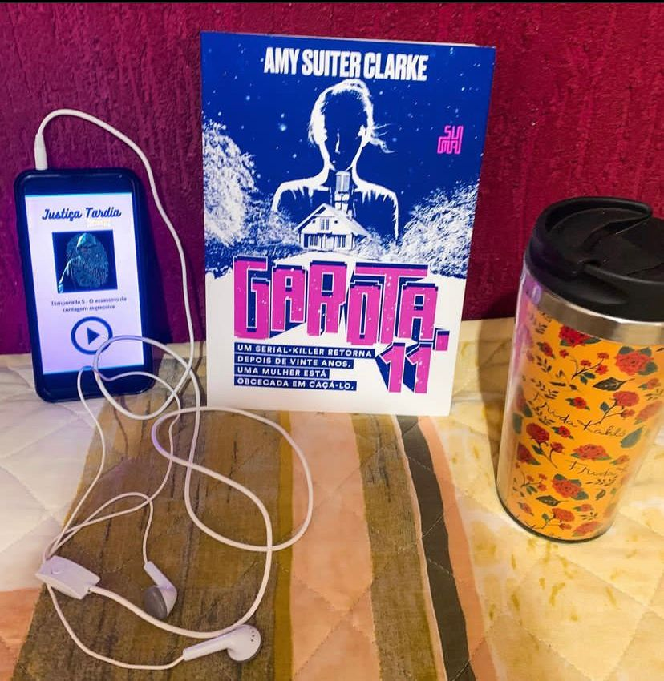

Garota 11
(AMY SUITER CLARKE - Suma)
⭐⭐⭐⭐⭐
Preparem-se para o novo lançamento da editora Suma - Gatota 11 e tudo que eu tenho a dizer é: que livro maravilhoso ! Um thriller que foge daquela fórmula que já conhecemos e funciona demais. A minha vontade de ler veio através do perfil do Leitor Noturno. Vou contar pra vocês do que se trata esse livro maravilhoso.
Elle Castilho nossa protagonista é fascinada por crimes e serial Killers e apresenta um podcast super popular que fala de crimes reais, na sua 5ª temporada ela decide abordar um caso pelo qual ela sempre foi obcecada - O Assassino da Contagem Regressiva, o ACR aterrorizou Minnesota décadas atrás, suas vítimas eram sempre mulheres e cada qual um ano mais jovem que a anterior. Depois que ele levou sua última vítima, os assassinatos pararam abruptamente. Ninguém nunca soube o motivo.
Elle decide investigar a fundo a história do assassino já que nunca acreditou na versão da polícia de que ele havia se suicidado. Mas, acontece que ele acaba despertando o assassino (ou seria um imitador?). A contagem regressiva é retomada e será que Elle é responsável por isso ? Ou queria que isso acontecesse?
O livro foi uma supresa maravilhosa nesse nefasto ano de 2021. Elle é uma protagonista bem construída, forte, mesmo que as vezes tome atitude questionáveis. Ela já foi assistente social e crianças é assunto bem delicado para ela. Não tem como deixar de se apegar a ela.
A narrativa é feita misturando transcrições dos episódios do podcast “Justiça tardia” e o dia a dia de Elle com seu marido médico legista Martín e de sua vozinha Sash e a filha Natalie.
O livro te envolve e faz com que você não queira largar a leitura por nada! E devo dizer que este thriller foge do óbvio, tornando a leitura única.